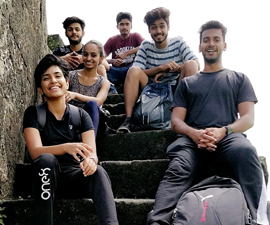
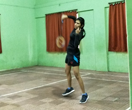
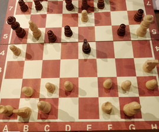
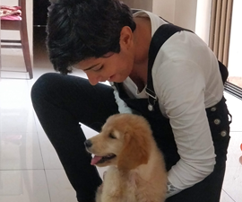
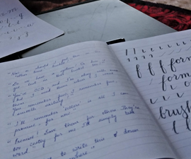

I engage in a few different activities that help me decompress. Here are glimpses of things that I love to do, on slower days.
Hiking
One day trek to Triund top, Himachal Pradesh. The day brings back memories of my first snowfall, a chilly nose and 14 kilometers of dense silence.That day, I discovered a lake inside a fort, on a hilltop. The descent was done with languid reluctance.

Monsoons bring together lost friends in the Sahyadri. Twin fortresses of Visapur and Lohgad were explored.
Indulging in a game of badminton or chess

Body smashes feel challenging, even when the shuttle is well within reach.

I learnt my lesson as I lost this game. A strategically placed pawn can be very daunting.
Spending time with dogs
Say hi to Skittles. His weak legs made him tumble repeatedly. He was found at a pit stop on a road trip to Sakleshpur.Meet Summer. We spent a fun, humid afternoon together in Bengaluru’s Cubbon park.

This is Stella. She was as thrilled as I was, to have a chat.
Origami
An afternoon in isolation blossomed into an oddly colored paper lotus, because of the use of readily available apparatus.

It took me a long time to start shaping letters in a form acceptable to my mind.